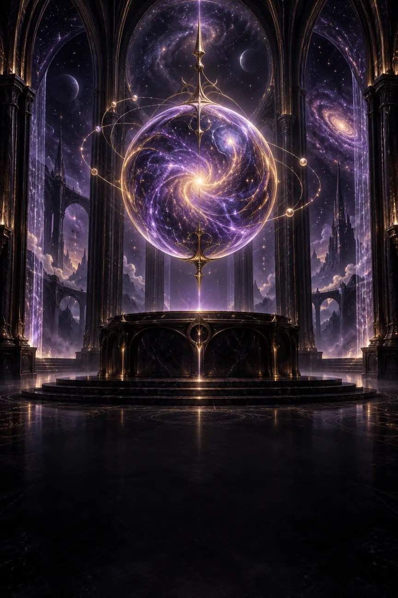

A Divina Bruxa busca oferecer uma experiência que possa ser percebida, compreendida e operada de diferentes maneiras. Esta página registra recursos já presentes, limitações conhecidas e o canal para relatar uma dificuldade real.
✦Esta é uma declaração de melhoria contínua, não uma certificação formal de conformidade.

UM UNIVERSO · DIFERENTES CAMINHOS
Conteúdo
Estruturado
Teclado
Foco protegido
Movimento
Reduzível
Meta
WCAG 2.2 AA
COMPROMISSO
Acessibilidade é parte da qualidade
O objetivo é reduzir barreiras para pessoas que navegam por toque, teclado, leitor de tela, ampliação, contraste personalizado ou preferência por menos movimento. As páginas públicas são construídas com HTML semântico, títulos organizados e links reais.
A V196 adota WCAG 2.2 AA como meta técnica, reforça foco visível e não encoberto, regiões inativas fora da ordem do teclado, alvos de toque e anúncios de estado. Isso não equivale a uma certificação formal: testes humanos com tecnologias assistivas continuam fazendo parte da validação.
RECURSOS JÁ PRESENTES
Caminhos que ajudam na navegação
⌨
Teclado e foco
Links e controles nativos recebem foco, e as páginas públicas oferecem um atalho “Ir para o conteúdo” no início.
▤
Estrutura e nomes
Títulos, regiões, listas, navegações, rótulos e textos de link ajudam a compreender a ordem e a finalidade do conteúdo.
☾
Movimento reduzido
Os guias públicos e seus efeitos respeitam a preferência do sistema por movimento reduzido sempre que suportada.
◇
Telas e ampliação
O layout se adapta a celulares e telas maiores, permite quebra de texto e não bloqueia o gesto de ampliação do navegador.
CONTEÚDO VISUAL
Imagem, cor e significado
01
Texto alternativo
Imagens editoriais relevantes recebem uma descrição curta. Elementos puramente decorativos são escondidos das tecnologias assistivas quando possível.
02
Cor com apoio textual
Informações importantes devem usar rótulos, ícones, estados ou texto, sem depender apenas da cor.
03
Tarot essencialmente visual
As cartas são obras visuais e a experiência livre preserva somente a imagem por escolha do produto. A biblioteca das 78 cartas oferece nomes e conteúdo textual para estudo separado.
VALIDAÇÃO CONTÍNUA
Aparelhos reais e tecnologias assistivas continuam essenciais
A Orbe, a Mesa Real com 78 posições e algumas transições são visualmente complexas. A V196 melhora teclado, foco, movimento reduzido e anúncios, mas combinações específicas de navegador, ampliação, VoiceOver ou TalkBack ainda precisam de uso humano recorrente.
Players e conteúdos controlados por plataformas externas podem variar conforme navegador, conta, região e atualizações do próprio serviço.